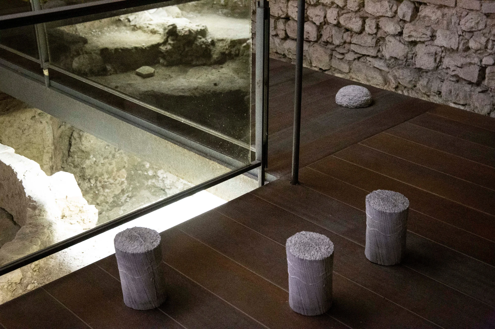
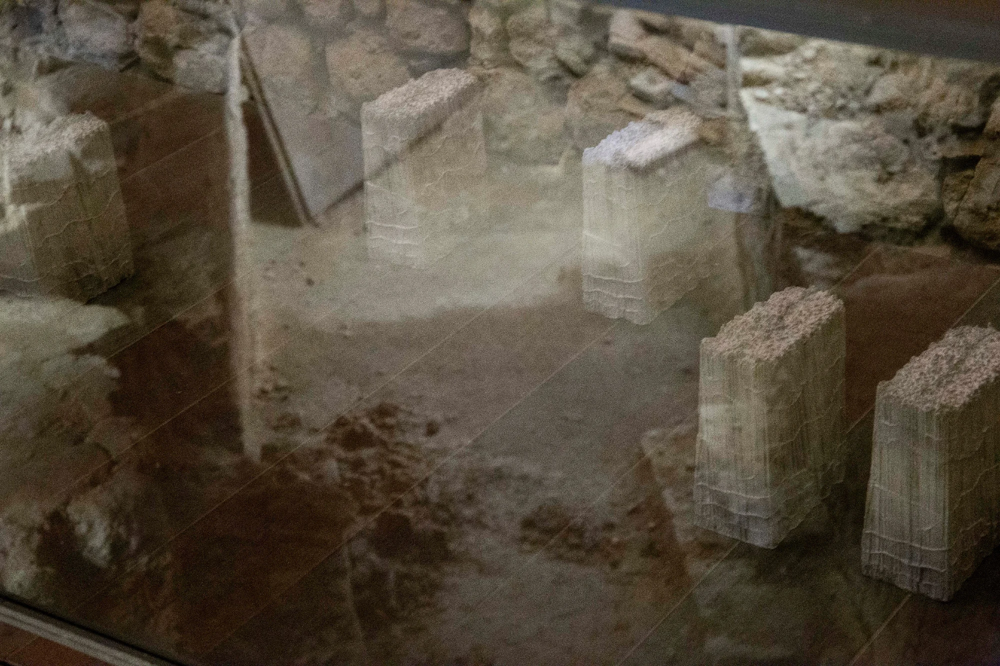
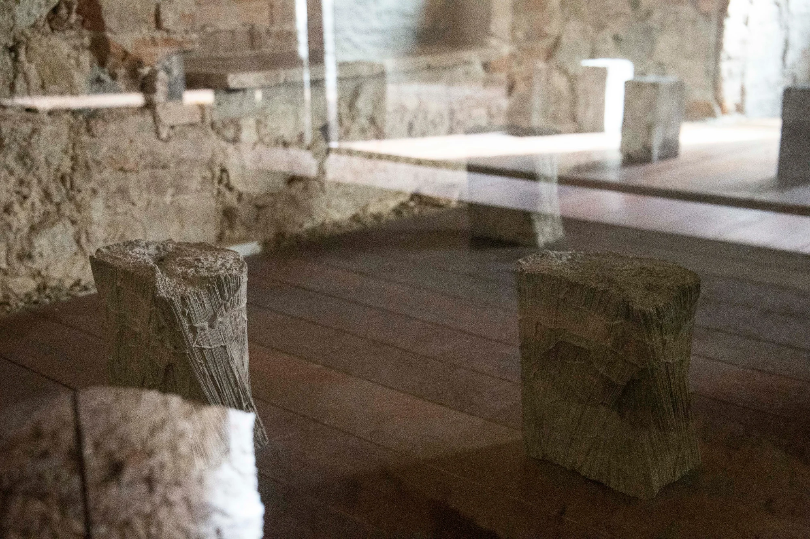
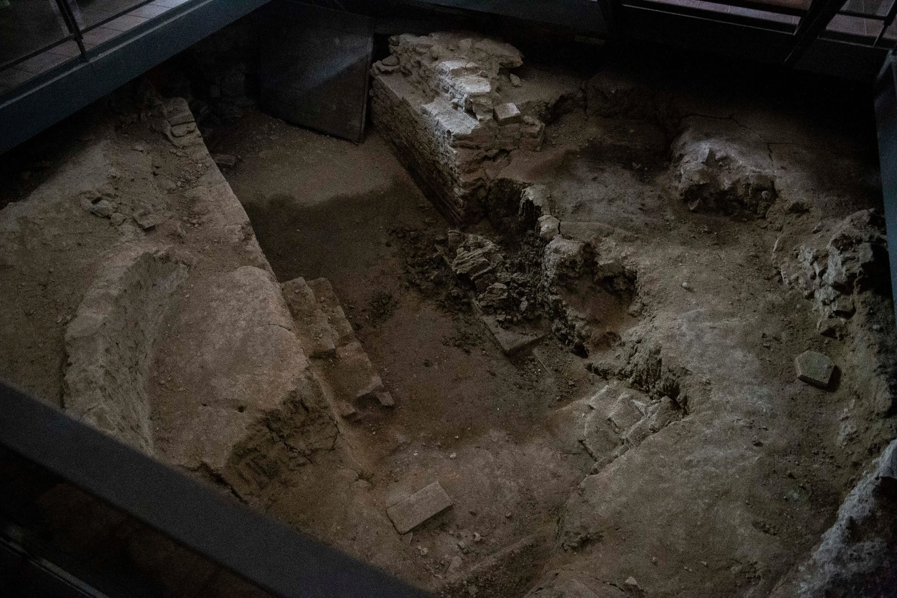

english below
WORK WORK WORK, è la prima mostra personale di Francesco Bendini. A partire da venerdì 20 agosto 2021 a Città di Castello, nella Rotonda Medievale, riunisce quarantacinque opere della serie Pasta (2019-2021).
Partendo da sollecitazioni dello spazio Bendini si interroga sul riconoscimento del lavoro degli artisti oggi e sul loro ruolo storico nella società. Durante il medioevo gli artisti erano considerati artigiani. Le loro opere non portavano firma e il loro lavoro, nella società medievale, era considerato alla pari di qualsiasi altro. Oggi, specialmente in giovane età, spesso non vengono considerati professionisti, trovandosi ad essere raramente equamente retribuiti o, ancor meno, protetti da sindacati o dalle istituzioni.
Bendini invade lo spazio con un intervento massiccio di sculture in cemento, materiale duro, solido, inventato agli inizi del milleottocento e utilizzato principalmente nell’edilizia. L’installazione consiste in sei serie di sculture. Ogni serie porta il nome della pasta che rappresenta: Capellini, Linguine, Bavette, Spaghetti quadrati, Spaghettini e Spaghetti. Il numero di opere fa riferimento al tempo di cottura della pasta in questione. I capellini richiedono tre minuti di cottura, dunque sono presenti tre copie. La pasta, protagonista di questa mostra, è un elemento fortemente riconoscibile che, in Italia, fa parte della vita quotidiana. Pasta leggera, morbida e vellutata si tramuta in oggetti pesanti, duri e ruvidi. Spaghetti, elementi sottili e longilinei, diventano segni nello spazio. La pasta, nutrimento inerente all’interno del corpo, si tramuta in cemento, materiale inorganico, tipicamente utilizzato per l’esterno.
Bendini realizza queste opere interamente a mano, partendo dalla pasta anziché da materiali tipici della scultura. Sceglie la pasta, le dà forma, crea gli stampi, cola il cemento al loro interno e, infine, colloca i lavori nello spazio. Nonostante le sculture siano copie, non sono quasi mai cloni. Lo stampo che le genera dopo ogni utilizzo si usura, creando piccole incongruenze di forma tra sculture gemelle.
Rotonda Medievale è un luogo che, con ogni probabilità, ha accompagnato artisti e artigiani. Non si sa con certezza quale fosse la destinazione d’uso originaria. Durante scavi archeologici furono trovati due pozzi, probabilmente utilizzati per l’estrazione dell’argilla, materiale tipico della scultura e dell’edilizia. La posizione della struttura fa presupporre che la rotonda sia nata come luogo di culto annesso ad un’area cimiteriale. Lo spazio ha una certa somiglianza a una cripta o un luogo di raccoglimento e le sculture di Bendini sono monoliti che nel contesto della Rotonda assumono un’aria di sacralità. Il loro essere fatte di pasta allude al cibo e alla vita legata al pasto.
L’allestimento dello spazio, senza piedistalli e a dir poco fitto, mostra l’intento di mettere in difficoltà lo spettatore. Bendini, appoggiando le sculture direttamente a terra senza creare corridoi di passaggio, obbliga il fruitore ad attivare il proprio corpo mettendosi in gioco fisicamente. L’unica limitazione è l’equilibrio stesso del fruitore. Visitare la mostra WORK WORK WORK non deve ricordare una passeggiata domenicale o un’attività rilassante, piuttosto un percorso ad ostacoli. L’artista, così facendo, spinge lo spettatore a staccarsi dall’istinto di cercare un punto preferenziale di sguardo, tipico della prospettiva rinascimentale, per tornare a una visione policentrica medievale dell’opera. Inoltre, chiedendo agli spettatori di muoversi nello spazio, Bendini cita le sue stesse opere facendo assumere alla scultura una qualità performativa tipica del suo lavoro.
La mostra nel suo insieme, fatta di citazioni stratificate, fa riferimento a Bendini stesso e a un’italianità iconica ed esuberante che lo incarna. WORK WORK WORK sarà l’atto conclusivo dei lavori della serie Pasta.
MIRAL RIVALTA
WORK WORK WORK is Francesco Bendini’s first solo exhibition. The show will be held in Città di Castello at the Medieval Rotonda, starting from Friday, August 20th, 2021. The exhibit will include forty-five concrete sculptures by the artist from his Pasta series.
The title concerns the consideration that prompted the artist to invade the space with an intervention of this magnitude. It also evokes suggestions on the idea of work, repetition, and Italianness. Bendini investigates the value and recognition of artists’ work today. Reacting to the space’s demands and considerations on the historical role artists have held in our society. Moreover, during the Middle Ages, artists were considered to be artisans. Works of art did not bear an author’s signature. Their labor, in medieval society, was regarded as on par with any other. Today, young artists are often not considered professionals. They struggle, are frequently not paid fairly, and are not protected by trade unions and institutions.
Bendini invades the space with a massive number of concrete artworks. The installation consists of six series of sculptures. Each series bears the name of the pasta it represents: Capellini, Square Spaghetti, Linguine, Bavette, Spaghettini, and Spaghetti. The number of works refers to the cooking time of the pasta in question. The capellini pasta requires three minutes to cook, so there are three copies. Concrete is a dense material developed in the early eighteenth century mainly used in construction. The artist chose not to use materials common in fine arts but instead to works with pasta. Pasta is the real protagonist of this exhibition, being a highly recognizable item part of the daily routine of Italians. The lightweight, soft and velvety pasta transforms into heavy, firm, and rough objects. Spaghetti, thin and slender elements, become marks in the space. Pasta, nourishment to be ingested, brought into/integrated into the body is transformed into cement, an inorganic matter made for the exterior.
These artworks are made entirely by the artist. He chooses the type of pasta, gives it a shape, makes the molds, pours the cement into them, and, finally, places the sculptures in the space. This process is done entirely by hand. The sculptures, even though they are copies, are rarely perfect clones. The mold, from which they come to be, slowly decays after each use, creating inconsistencies in shape between twin sculptures.
The original intended use of the Medieval Rotunda is not known. Nonetheless, in all likelihood, it has encountered its fair share of artists and artisans. Two wells were uncovered during archaeological excavations, most probably used for clay extraction, a material often used in sculpture and construction. The position of the building suggests that the Rotonda was a place of worship connected to a cemetery. The space resembles a crypt or a place for contemplation. Bendini’s sculptures are monoliths, and the location gives them an air of sacredness. Being made of and shaped like pasta alludes to food and life linked to the meal.
The sculptures in the space are close to each other and without pedestals. The arrangement shows the artist’s intent to put the viewer in a difficult position. By placing the sculptures directly on the ground without creating passageways, Bendini forces the viewer to activate his own body. The only limitation becomes the balance of the spectator. Visiting the WORK WORK WORK exhibition should not remind you of a walk in the park or a relaxing activity but rather an obstacle course. The artist means to push the spectator to break away from the instinct to look for a preferential point of view, typical of the Renaissance perspective, to return to a medieval polycentric vision of the artwork. By asking viewers to move around the space, Bendini also gives his sculptures a performative quality, typical of his works.
This work, as a whole, filled with layered citations, refers to an iconic and exuberant Italian spirit that embodies Bendini. WORK WORK WORK will be the final act of the works of the Pasta series.



